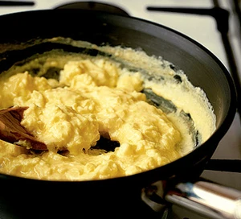

Scrambled Eggs

Description
Here's the thing: I might be a little dramatic. I might use super-describers like magic and miracle and unbelievable to describe my favorite recipes. Regularly. This is all true.
But when I say life-changing soft scrambled eggs? I literally mean life-changing.
These eggs changed my life because – please withhold judgment – I used to NOT EAT SCRAMBLED EGGS. I know. I am not a picky eater, but scrambled eggs were one of a total of, like, three ingredients on my food black list.
Ingredients
- 2 large free range eggs
6 tbsp single cream or full cream milk
- a knob of butter
Steps
- Whisk 2 large eggs, 6 tbsp single cream or full cream milk and a pinch of salt together until the mixture has just one consistency.
- Heat a small non-stick frying pan for a minute or so, then add a knob of butter and let it melt. Don't allow the butter to brown or it will discolour the eggs.
- Pour in the egg mixture and let it sit, without stirring, for 20 seconds. Stir with a wooden spoon, lifting and folding it over from the bottom of the pan.
- Let it sit for another 10 seconds then stir and fold again.
- Repeat until the eggs are softly set and slightly runny in places. Remove from the heat and leave for a moment to finish cooking.
- Give a final stir and serve the velvety scramble without delay.
Back to Top